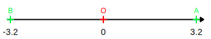

|
B2
|
- Repérage et comparaison
|
Repérage sur une droite graduée (Rappels) :
Propriété :
Sur la droite graduée, chaque point est repéré par un nombre relatif unique appelé l'abscisse de ce point.
La distance à zéro d'un point sur la droite graduée est la distance entre l'origine et ce point.
Remarque :
- La distance à zéro est toujours positive.
L'opposé d'un nombre est le nombre ayant le signe opposé et la même distance à zéro.
Exemple :
-3,2 et l'opposé de +3,2.

Comparaison de nombres relatifs :
Propriétés :
- Un nombre négatif est toujours plus petit qu'un nombre positif.
- De deux nombres positifs, le plus grand est celui qui a la plus grande distance à zéro.
- De deux nombres négatifs, le plus grand est celui qui à la plus petite distance à zéro.
Exemples :
$-12 < +3$
$-27 < 15$
$-99,24 < +1,2$
$+7 < +16$
$9 < 63$
$+14,3 < 26,2$
$-12 < -5$
$-74 < -2,1$
$-1,2 < -1,1$
Remarques :
- Sur une droite graduée, les nombres sont rangés dans l'ordre croissant de la gauche vers la droite.
- Pour deux nombre négatifs celui le plus à gauche est le plus petit.